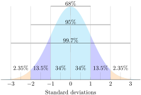

Introduce and discover properities of normal distributions
If you knew that the prices of t-shirts sold in an online shopping site were normally distributed, and had a mean cost of $10, with a standard deviation of $1.50, how could that information benefit you as you are looking at various t-shirt prices on the site? How could you use what you know if you were looking to make a profit by purchasing unusually inexpensive shirts to resell at prices that are more common?
Subsection10.1.1The Normal Distribution
A distribution is an evaluation of the way that points in a data set are clustered or spread across their range of values. A normal distribution is a very specific symmetrical distribution that indicates, among other things, that exactly \(\frac{1}{2}\) of the data is below the mean, and \(\frac{1}{2}\) is above, that approximately 68% of the data is within 1, approximately 95% of the data is within 2, and approximately 99.7% is within 3 standard deviations of the mean.
There are a number of reasons that it is important to become familiar with the normal distribution, as you will discover throughout this chapter. Examples of values associated with normal distribution:
Physical characteristics such as height, weight, arm or leg length, etc.
The percentile rankings of standardized testing such as the ACT and SAT
The volume of water produced by a river on a monthly or yearly basis
The velocity of molecules in an ideal gas
Knowing that the values in a set are exactly or approximately normally distributed allows you to get a feel for how common a particular value might be in that set. Because the values of a normal distribution are predictably clustered around the mean, you can estimate in short order the rarity of a given value in the set. In our upcoming lesson on the Empirical Rule, you will see that it is worth memorizing that normally distributed data has the characteristics mentioned above:
50% of all data points are above the mean and 50% are below
Approximately 68% of all data points are within 1 standard deviation of the mean
Approximately 95% of all data points are within 2 standard deviations of the mean
Approximately 99.7% of all data points are within 3 standard deviations of the mean
In this lesson, we will be practicing a ‘rough estimate’ of the probability that a value within a given range will occur in a particular set of data, just to develop an intuition of the use of a normal distribution. In subsequent lessons, we will become more specific with our estimates. The image below will be used in greater detail in the lesson on the Empirical Rule, but you may use it as a reference for this lesson also.

Figure10.1.1.Image Credit: RRCC
Subsection10.1.2Examples
Human height is commonly considered an approximately normally distributed measure. If the mean height of a male adult in the U.S.A. is 5'10", with a standard deviation of 1.5", how common are men with heights greater than 6'2"?
Since each standard deviation of this normally distributed data is 1.5", and 6'2" is 4" above the mean for the population, 6'2" is nearly 3 standard deviations above the mean. That tells us that men taller than 6'2" are quite rare in this population.
If the fuel mileage of a particular model of car is normally distributed, with a mean of 26 mpg and a standard deviation of 2 mpg, how common are cars with a fuel efficiency of 24 to 25 mpg?
We know that approximately 68% of the cars in the population have an efficiency of between 24 and 28 mpg, since that would be 1 SD below and 1 SD above the mean. That suggests that apx 34% have an efficiency of 24 to 26 mpg, so we can say that it is uncommon to see a car with an efficiency between 24 and 25 mpg, but not extremely so.
If the maximum jumping height of U.S. high school high jumpers is normally distributed with a mean of 5'11.5" and a SD of 2.2", how unusual is it to see a high school jumper clear 6'3"?
If the mean is 5'11.5", then 1 SD above is 6'1.7" and 2 SD’s is 6'3.9". That means that less than 2.5% of jumpers 6'3.9", so it would be pretty uncommon to see a high-school competitor exceed 6'3".
For the examples below assume the data to be normally distributed, and describe the rarity of an event using the following scale:
0% - < 1% probability = very rare
1% - < 5% = rare
5% - < 34% = uncommon
34% - < 50% = common
50% - 100% = likely
Example10.1.2.
If the mean (\(\mu\)) of the data is 75, and the standard deviation (\(\sigma\)) is 5, how common is a value between 70 and 75?
A value of 70 is only 1 standard deviation below the mean, so a value between 70 and 75 would be expected approximately 34% of the time, so it would be common.
Example10.1.3.
If the \(\mu\) is .02 and the standard deviation is .005, how common is a value between .005 and .01?
A value of .01 is 2 SD's below the mean, and .005 is 3 SD's below, so we would expect there to be about a 2.5% probability of a value occurring in that range. A value between 0.005 and 0.01 would be rare.
Problem10.1.4.Try It Now.
If the mean is 1280 and the standard deviation is 70, how common is a value between 1210 and 1350?
1210 is 1 SD below the mean, and 1350 is 1 SD above the mean, so we would expect approximately 68% of the data to be in that range, meaning that is it likely that a value in that range would occur.
Example10.1.5.
If the mean defect rate at a cellphone production plant is 0.1%, with a standard deviation of 0.03%, would it seem reasonable for a quality assurance manager to be concerned about 3 defective phones in a single 1000 unit run?
0.1% translates into 1 per thousand, with a standard deviation of 3 per ten thousand. That means that 3 defects in the same thousand is nearly 7 SD’s above the mean, well into the very rare category. While it is not impossible for random chance to result in such a value, it would certainly be prudent for the manager to investigate.
Returning to the problem, we started with:
If you knew that the prices of t-shirts sold in an online shopping site were normally distributed, and had a mean cost of $10, with a standard deviation of $1.50, how could that information benefit you as you are looking at various t-shirt styles and designs on the site? How could you use what you know if you were looking to make a profit by purchasing unusually inexpensive shirts to resell at prices that are more common?
By knowing the mean and SD of the shirt prices, and knowing that they are normally distributed, you can estimate right away if a shirt is priced at a point significantly below the norm. For instance, with this data, we can estimate that a shirt priced at $7.00 is less expensive than apx 97.5% of all shirts on the site, and could likely be resold at a profit (assuming there is not something wrong the shirt that is not obvious from the listing).